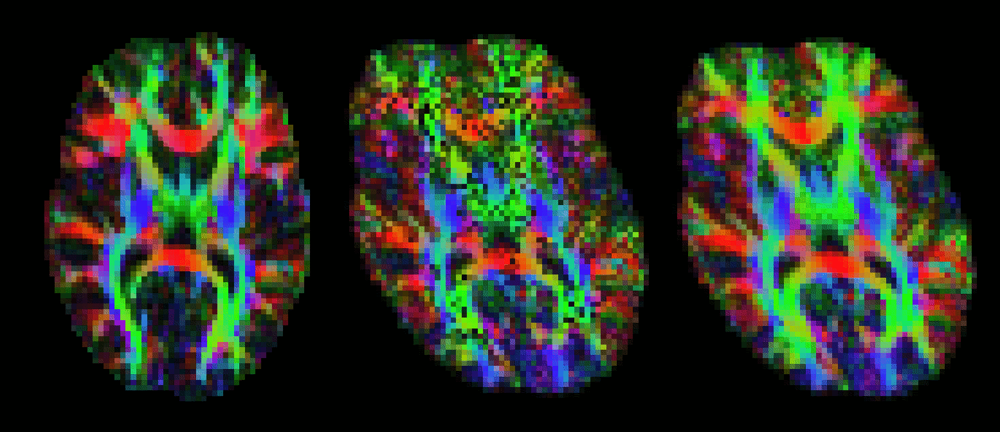

The output of Connectivity-based seed classification is a single volume for
each target mask, named seeds_to_{target} where {target} is replaced
by the file name of the relevant target mask. In these output images, the
value of each voxel within the seed mask is the number of samples seeded
from that voxel reaching the target mask.
proj_thresh is run as follows:
proj_thresh list_of_volumes threshold
Where the list of volumes is the outputs of Connectivity-based seed classification (i.e., files named seeds_to_target1 etc etc) and threshold is expressed as a number of samplesThe output of Connectivity-based seed classification is a single volume for each target mask, named seeds_to_{target} where {target} is replaced by the file name of the relevant target mask. In these output images, the value of each voxel within the seed mask is the number of samples seeded from that voxel reaching the target mask. find_the_biggest classifies seed voxels according to the target mask with which they show the highest probability of connection. It is run as follows:
find_the_biggest list_of_volumes outputname Where the list of volumes is the outputs of Connectivity-based seed classification (i.e., files named seeds_to_target1 etc etc).
The example below uses probtrackx and find_the_biggest to perform hard segmentation of the thalamus on the basis of its connections to cortex.

After running dtifit or bedpostx, it is often useful to register vector data to another space. For example, one might want to represent V1 for different subjects in standard space. vecreg is a command line tool that allows to perform such registration.
Vector images cannot be registered by simply applying a transformation (as calculated by, say, FLIRT) to every voxel's coordinates. The corresponding vectors have to be reoriented accordingly (see D. Alexander 2001, IEEE-TMI 20:1131-39). vecreg performs this operation for you.
The image on the right shows the effect of applying vecreg (right) to the V1 image on the left, compared to simply applying voxelwise transformation (e.g. using applyxfm4D) to the vectors (centre).
Important: vecreg does not calculate a transformation, but simply applies a given transformation to the input vector field. vecreg can apply a linear transformation calculated with FLIRT, or a non-linear transformation calculated by FNIRT.
types of input that may be used for vecreg
from dtifit: V1,V2,V3,tensor
from bedpostx: dyads1, dyads2, etc.
Command-line utility
using a flirt matrix
vecreg -i input_vector -o output_vector -r reference_image -t flirt_transform.mat
using a warpfield
vecreg -i input_vector -o output_vector -r reference_image -w warp_field
more options
vecreg -i <input4D> -o <output4D> -r <refvol> [-t <transform>]
Compulsory arguments (You MUST set one or more of):
-i,--input filename for input vector or tensor field
-o,--output filename for output registered vector or tensor field
-r,--ref filename for reference (target) volume
Optional arguments (You may optionally specify one or more of):
-v,--verbose switch on diagnostic messages
-h,--help display this message
-t,--affine filename for affine transformation matrix
-w,--warpfield filename for 4D warp field for nonlinear registration
--rotmat filename for secondary affine matrix
if set, this will be used for the rotation of the vector/tensor field
--rotwarp filename for secondary warp field
if set, this will be used for the rotation of the vector/tensor field
--interp interpolation method : nearestneighbour, trilinear (default), sinc or spline
-m,--mask brain mask in input space
--refmask brain mask in output space (useful for speed up of nonlinear reg)